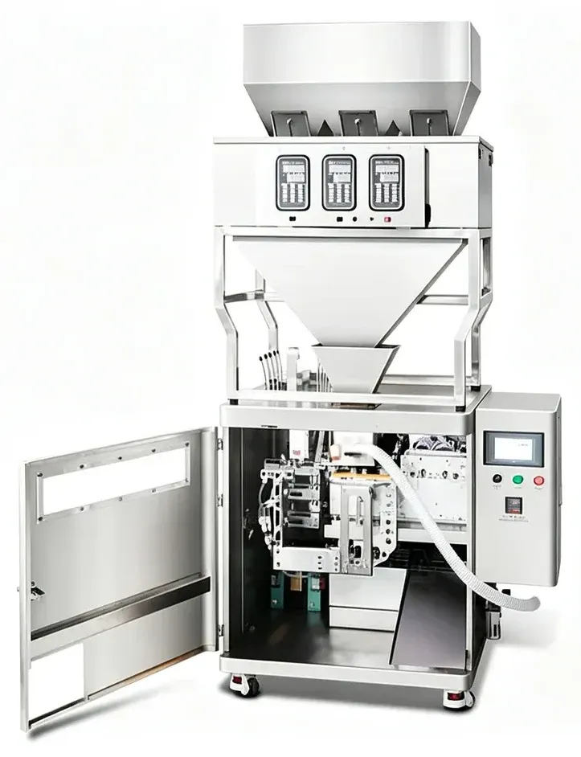
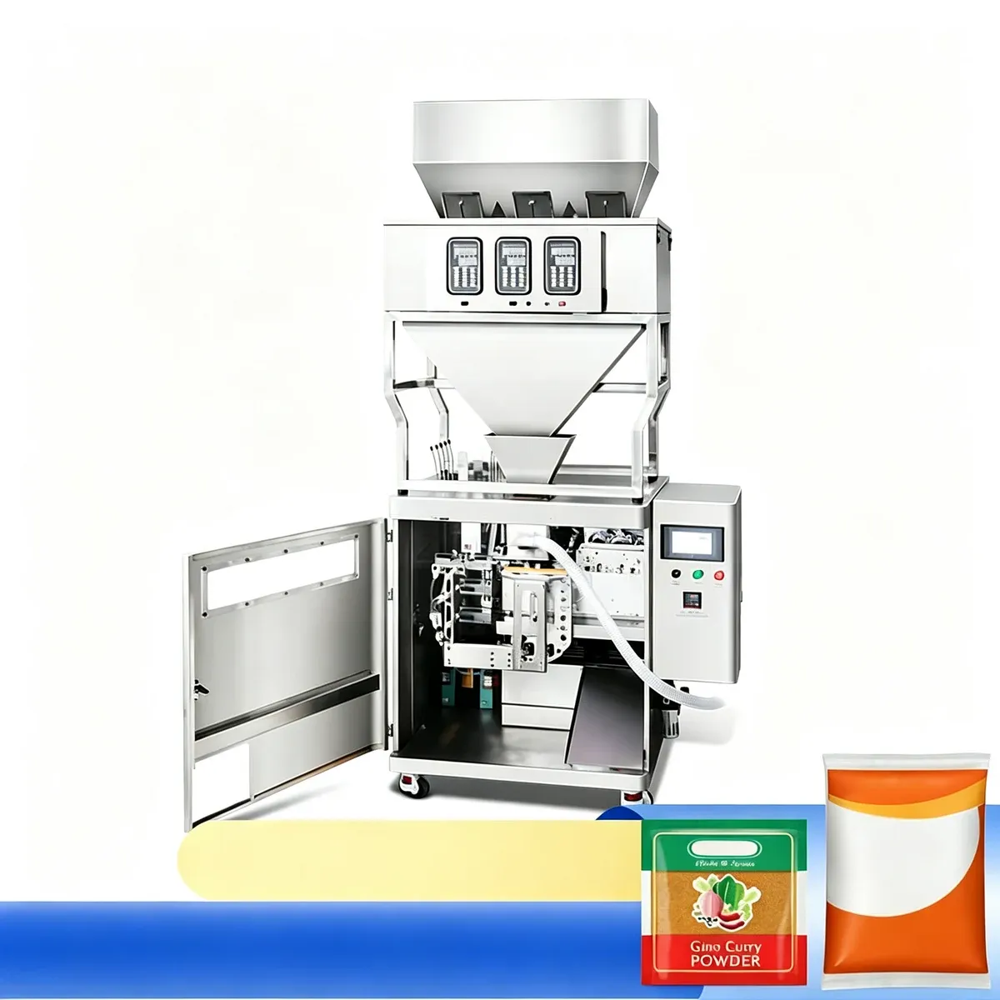
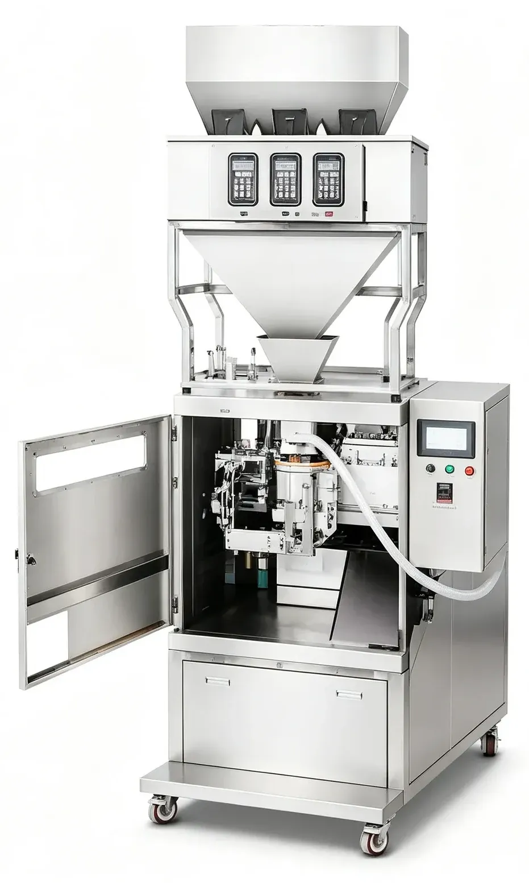

01
Premade Pouch
PBF-04 Automatic Premade Pouch Granule Weighing and Packing Machine
PBF-04 automatic premade pouch packing machine with electronic weighing for pet food, grains, oatmeal, bath salts and other granules. 100–1000 g filling range and optional automatic feeding.
PBF-04
Product Introduction
The PBF-04 Automatic Premade Pouch Packing Machine is designed for filling and sealing free-flowing granular products into ready-made bags.
Equipped with a multi-head electronic weighing system, the machine can automatically weigh the required quantity, feed the product into premade pouches, and complete bag handling and sealing.

The standard configuration is especially suitable for products such as pet food, grains, bath salts, dried herbs, seasoning materials and similar granular products.
It can be used for either a single product or a combination of different materials, making it suitable for applications where several ingredients need to be packed together.

Product Name: Automatic Premade Pouch Granule Packing Machine; Model: PBF-04; Product Category: Packaging Machine; Product Subcategory: Premade Pouch Packing Machine / Granule Packing Machine; Packaging Type: Premade Pouches; Standard Dosing System: 3-Head Electronic Weighing System.

Why Use Weight-Based Filling for Granules?
Granular products can vary significantly in particle size, shape and bulk density. For this reason, weight-based filling is often more suitable than fixed-volume dosing when consistent package weight is required. Actual filling performance depends on factors such as:
02
Bulk density
03
Product shape
04
Product flowability
05
Target filling weight
06
Required packaging speed
Product samples are recommended when higher filling accuracy is required.
PBF-04
Specifications
*Actual filling accuracy depends on product size, density, flowability, filling weight and machine configuration. Technical specifications are for reference. Final parameters should be confirmed according to the actual product and packaging requirements.
Suitable Products & Pouch Types
Suitable products: items 01–12. Pouch types: items 13–17. The actual machine configuration should be selected according to product size, bulk density, flowability and required filling weight. Zipper pouch handling can be customized according to the customer's bag specifications.
01
Pet food
02
Dry pet treats
03
Grains
04
Cereals
05
Oatmeal
06
Bath salts
07
Dried herbs
08
Seasoning materials
09
Seeds
10
Nuts
11
Dried food products
12
Small granular products
13
Standard premade bags
14
Flat pouches
15
Stand-up pouches
16
Zipper pouches
17
Other compatible premade pouch formats
Applications
01
Pet Food
Suitable for dry pet food, treats and similar free-flowing granular products.
02
Food and Grain
Suitable for grains, oatmeal, cereals, seeds and selected dry food products.
03
Seasoning and Herbs
Suitable for dried herbs, seasoning materials and granular ingredient mixtures.
04
Household and Personal Care Products
Suitable for products such as bath salts and similar granular materials.
Key Features
01
Electronic Weighing System
The PBF-04 uses an electronic weighing system to control the filling quantity. This configuration is suitable for granular materials where weight-based dosing provides better control than volumetric measurement. The target filling quantity can be adjusted according to products and package sizes.
02
Suitable for Single or Mixed Products
The multi-head weighing structure allows the machine to handle either one type of material or combinations of different granular ingredients. This makes the machine suitable for products such as: Mixed grains, Pet food blends, Herb mixtures, Seasoning mixtures, Multi-component granular products.
03
Automatic Premade Pouch Feeding
Premade pouches are placed in the bag storage section and automatically supplied to the packaging station. The adjustable pouch handling structure allows the machine to accommodate different bag dimensions within the specified range.
04
Touchscreen Control
The machine is equipped with a PLC-based control system and touchscreen interface. Operators can conveniently set and adjust production parameters according to the required filling quantity and packaging conditions. This simplifies machine operation and product changeover.
05
Wide Pouch Size Range
The machine can accommodate pouch sizes from approximately: 50 × 70 mm to 180 × 260 mm. This allows one machine to handle several package formats within the specified range.
06
Automatic Filling and Sealing
The machine combines weighing, pouch feeding, product filling and sealing into one automatic packaging process. This reduces repetitive manual operation and improves production continuity.
07
Modular Machine Design
The weighing system and pouch packaging section use a modular design. This provides greater flexibility for machine configuration, production layout and future system expansion.
08
Optional Feeding System
An automatic feeding machine can be added according to production requirements. This reduces frequent manual material loading and helps maintain a more continuous supply of product to the weighing system.
09
Optional Dust Collection System
For products that generate dust or fine particles, a dust collection system can be added. This helps reduce airborne particles around the weighing and filling area and keeps the packaging section cleaner.
How It Works
01
Product Feeding
The product is supplied to the weighing system manually or through an optional automatic feeding unit.
02
Electronic Weighing
The electronic scales measure the required quantity according to the preset filling weight.
03
Pouch Feeding
Premade bags are supplied from the pouch storage rack to the packaging position.
04
Bag Positioning
The pouch is correctly positioned and prepared for filling.
05
Product Filling
The measured product is discharged into the pouch.
06
Bag Sealing
The sealing mechanism closes the pouch after filling.
07
Finished Package Output
The completed pouch leaves the machine for collection or connection with downstream equipment.
Customer Benefits
01
Reduce Manual Packaging Work
Automatic weighing, pouch feeding, filling and sealing reduce repetitive manual operation.
02
Improve Filling Consistency
Weight-based dosing helps maintain more consistent package weights during production.
03
Handle Different Pouch Sizes
The adjustable pouch handling system allows one machine to accommodate several bag sizes within the specified range.
04
Support Product Changeover
Production settings can be adjusted through the touchscreen for different filling quantities and packaging requirements.
05
Package Mixed Products
The multi-head weighing system provides greater flexibility when several granular components need to be packed together.
06
Improve Production Continuity
Optional automatic feeding equipment can reduce manual loading frequency and help maintain continuous operation.
Configuration
Standard configuration: items 01–07. Optional configurations: items 08–12. Final standard configuration should be confirmed before order.
01
Main premade pouch packaging machine
02
3-head electronic weighing system
03
Pouch storage and feeding structure
04
Filling system
05
Bag sealing unit
06
PLC control system
07
Touchscreen interface
08
Automatic material feeding machine
09
Dust collection system
10
Customized zipper pouch handling
11
Customized pouch holding structure
12
Other auxiliary equipment can be evaluated according to the customer's production process.
For higher production efficiency, the PBF-04 can be equipped with an automatic material feeder. This option is particularly useful when:
Production runs are longer; Manual loading frequency needs to be reduced; A stable supply of material is required; The machine is integrated into a larger packaging line.
A dust collection configuration is available for materials that generate fine dust during handling. The system can help:
Reduce airborne dust; Keep the weighing area cleaner; Reduce contamination around the filling section; Improve working conditions around the machine. The requirement for dust collection should be evaluated according to the actual material.
Information Required for Quotation
Selection Guide
For mixed products, please also provide the number of different materials and the required weight of each component per pouch.
01
Product name
02
Product photos or samples
03
Particle size
04
Bulk density, if available
05
Filling weight per pouch
06
Pouch type
07
Pouch width × length
08
Whether the pouch has a zipper
09
Required packaging speed
10
Required filling accuracy
11
Local voltage and frequency
12
Destination country
PBF-04
Frequently Asked Questions
Product Video
PBF-04 in Operation
Watch the PBF-04 automatic premade pouch granule packing machine in operation.
PBF-04
Need Help Selecting the Right Granule Packing Machine?
Tell us about your granule product, pouch size and filling requirements. Our team will help you choose the right weighing and premade pouch packing configuration.